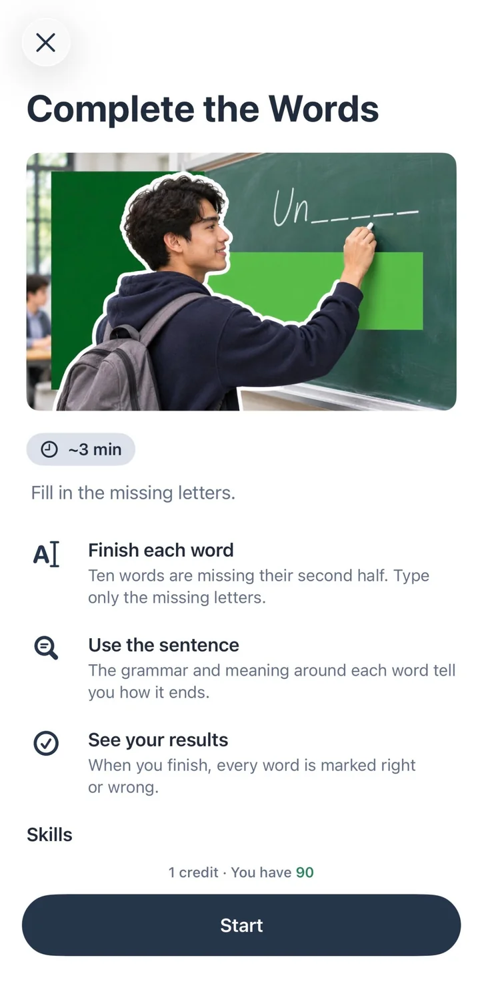
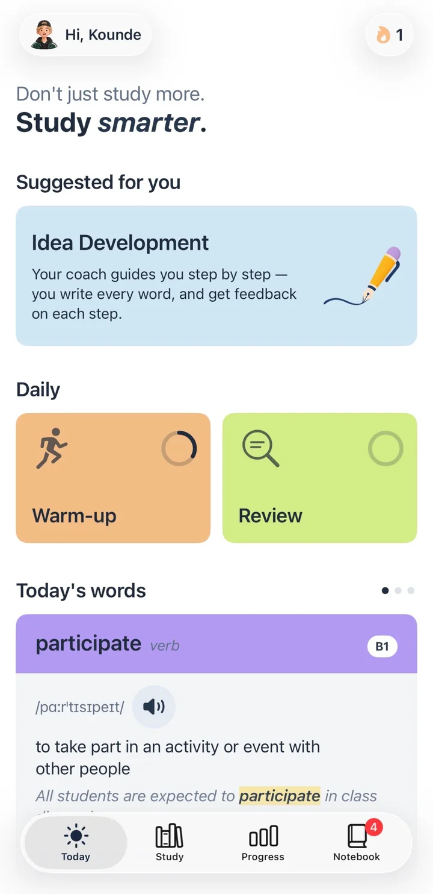
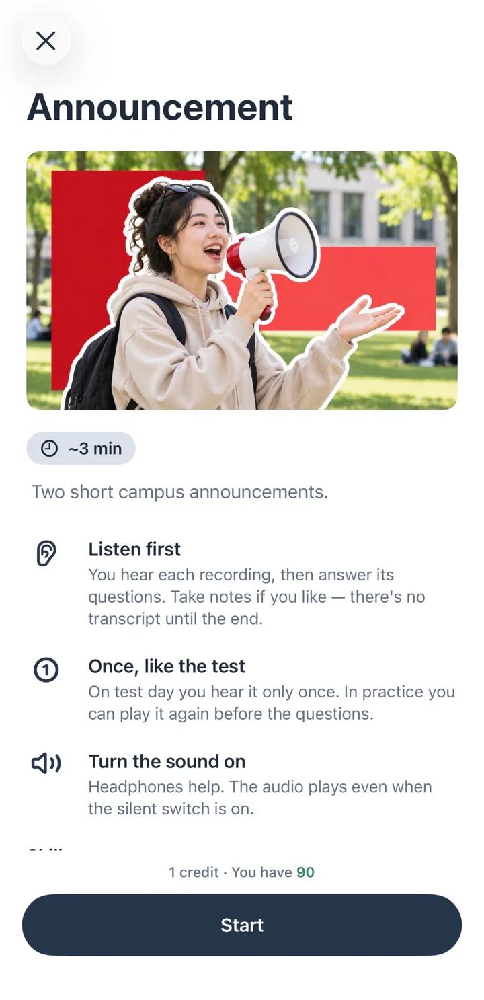
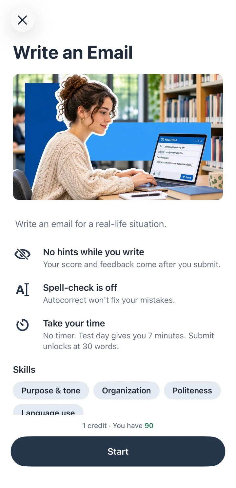
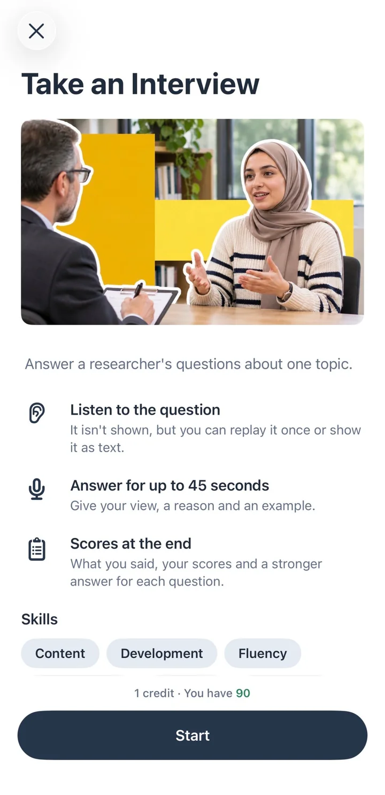
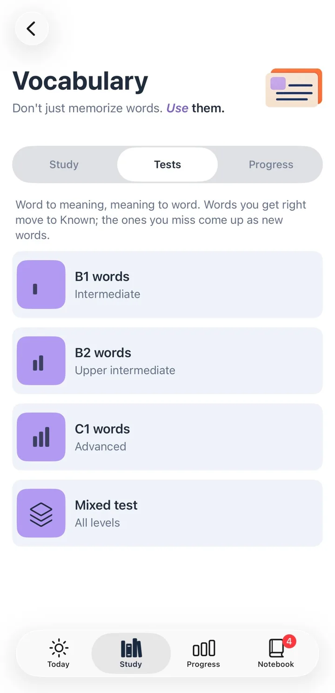
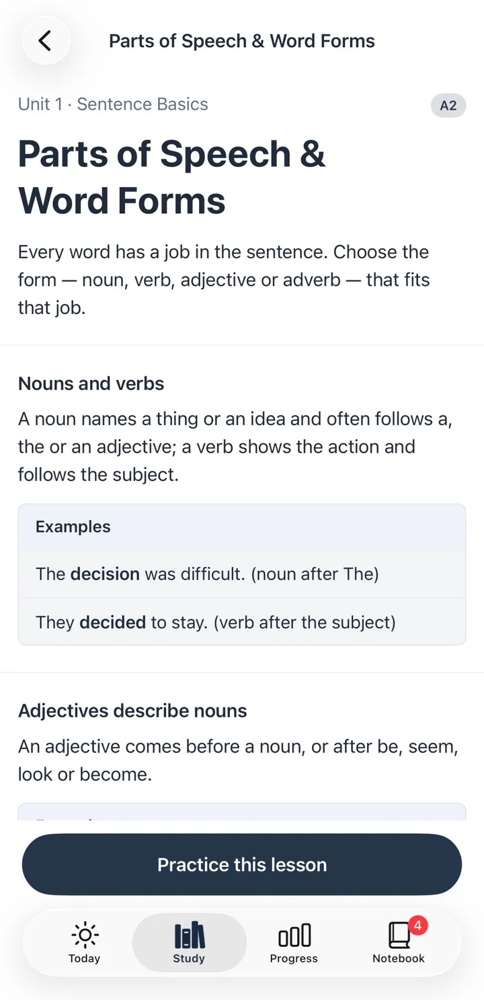
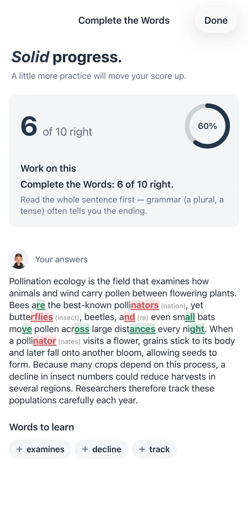
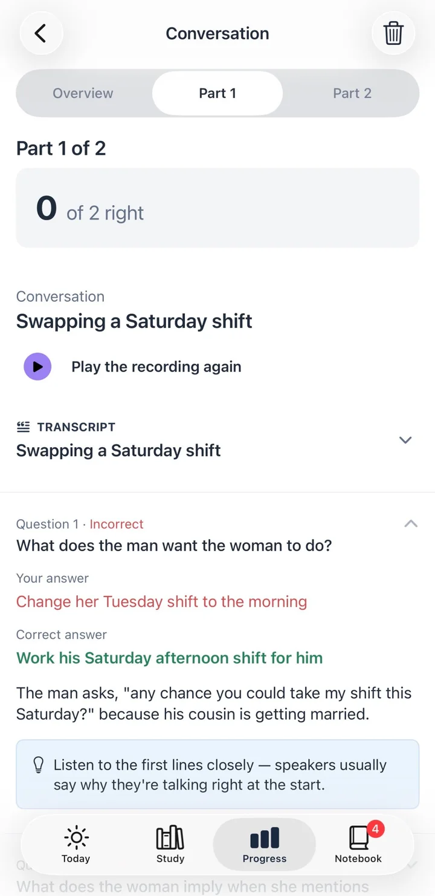

Reading
Fill in missing letters, read everyday notices and emails, and work through academic passages.
- Complete the Words
- Read in Daily Life
- Academic Passage

Prepoch is TOEFL iBT practice for iPhone, built for the 2026 test. Practice every task type, get feedback that shows you why, and see your band move.
Your first practice is free. No subscription needed to try it.

Each section has every task type of the new test and a timed section exam. Practice one task at a time, or sit the whole section like test day.
Fill in missing letters, read everyday notices and emails, and work through academic passages.

Short replies, conversations, campus announcements and academic talks, played once like on test day.

Build sentences, write an email for a real situation and join an academic discussion.

Repeat what you hear, then answer a researcher's questions out loud and get your answers scored.

Three new academic words a day, each with an example, collocations and synonyms. Then test yourself by level.

Short lessons, unit by unit, with examples and quick checks that fix the patterns you get wrong.

Each answer shows the exact line in the passage or recording that leads to it, in plain English.
Your emails and discussion posts get feedback on ideas, organization and language. Speaking answers are scored on what you said and how clearly you said it.
Words, phrases and mistakes from your practice collect in the Notebook, and short review cards bring them back before you forget.


A little practice every day, across all four sections, with the app keeping track of what comes next.
See what to practice next, your daily warm-up and review, and three new words.
Pick a task in any section. Practice shows tips and answers as you go; exams don't.
Your mistakes and new words come back as short review cards until you know them.
See your estimated band for each section and overall, with the matching CEFR level, and how close you are to your target.
Scores in Prepoch are practice estimates. They are not official TOEFL scores.
Sign in with Apple or Google and try any practice with full feedback. After that, practices use credits: one credit per practice, two to four for a full section exam.
No. Prepoch is an independent app. All questions, passages and recordings are written and produced by us to follow the published 2026 TOEFL iBT format. They are not real test questions.
Yes. The app is in English, like the test itself.
You can look around as a guest. Sign in with Apple or Google to practice: your first practice is free, and your credits and progress stay with your account.
Bands follow the 2026 TOEFL scale and its CEFR levels, but they are estimates from your practice, and AI feedback can be wrong. Use them to track progress, not to predict your official score.
Your Speaking answers are sent securely to our AI service to be scored. We don't keep the recordings after scoring, only the result. See the Privacy Policy.
Subscriptions are managed by Apple. On your iPhone open Settings, tap your name, then Subscriptions, choose Prepoch and tap Cancel Subscription.